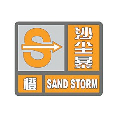

沙尘暴预警信号及防御指南
沙尘暴预警信号分三级，分别以黄色、橙色、红色表示。
（一）沙尘暴黄色预警信号

标准：12小时内可能出现沙尘暴天气（能见度小于1000米），或者已经出现沙尘暴天气并可能持续。
防御指南：1.政府及相关部门按照职责做好防沙尘暴工作；2.关好门窗，加固围板、棚架、广告牌等易被风吹动的搭建物，妥善安置易受大风影响的室外物品，遮盖建筑物资，做好精密仪器的密封工作；3.注意携带口罩、纱巾等防尘用品，以免沙尘对眼睛和呼吸道造成损伤；4.呼吸道疾病患者、对风沙较敏感人员不要到室外活动。
（二）沙尘暴橙色预警信号

标准：6小时内可能出现强沙尘暴天气（能见度小于500米），或者已经出现强沙尘暴天气并可能持续。
防御指南：1.政府及相关部门按照职责做好防沙尘暴应急工作；2.停止露天活动和高空、水上等户外危险作业；3.机场、铁路、高速公路等单位做好交通安全的防护措施，驾驶人员注意沙尘暴变化，小心驾驶；4.行人注意尽量少骑自行车，户外人员应当戴好口罩、纱巾等防尘用品，注意交通安全。
（三）沙尘暴红色预警信号
标准：6小时内可能出现特强沙尘暴天气（能见度小于50米），或者已经出现特强沙尘暴天气并可能持续。
防御指南：1.政府及相关部门按照职责做好防沙尘暴应急抢险工作；2.人员应当留在防风、防尘的地方，不要在户外活动；3.学校、幼儿园推迟上学或者放学，直至特强沙尘暴结束；4.飞机暂停起降，火车暂停运行，高速公路暂时封闭。